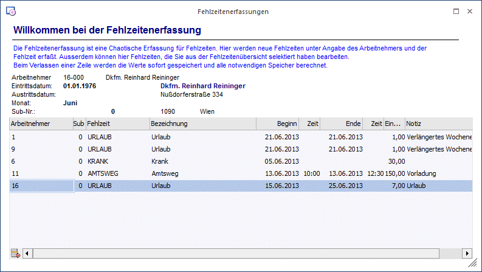

Über den Menüpunkt
1 Abrechnen
1 Zeiterfassung/Auswertung
1 Fehlzeitenerfassung
können Fehlzeiten erfasst werden, wobei dieses Fenster auch nur zur Erfassung dient.

Eingabefelder
Ø Arbeitnehmer
Eingabe des AN, für den eine Fehlzeit erfasst wird. Wie die AN-Nummer eingegeben werden kann, dazu gibt es mehrere Möglichkeiten. Details dazu entnehmen Sie bitte dem Kapitel Aufruf einer AN-Nummer. Wurde der AN eingetragen, werden im oberen Bereich des Fensters die wichtigsten Daten des AN (Name, Adresse, Eintritts- und ggf. Austrittsdatum) angezeigt.
Ø Sub
Hier wird die SUB-Nr. angezeigt (wenn AN mit SUB-Nr. bearbeitet werden), für die die Fehlzeiten erfasst werden.
Ø Fehlzeit
Eingabe der Fehlzeitennummer. Durch Drücken der F9-Taste kann nach allen angelegten Fehlzeiten gesucht werden.
Ø Bezeichnung
Die Bezeichnung der Fehlzeit wird automatisch aus dem Fehlzeitenstamm übernommen und kann nicht verändert werden.
Ø Beginn - Zeit
Hier wird das Datum und die Uhrzeit des Beginns der Fehlzeit eingetragen (die Uhrzeit kann nur dann eingetragen werden, wenn die entsprechende Option dafür in der Fehlzeit gesetzt ist).
Ø Ende - Zeit
Eingabe des Endes der Fehlzeit. Auch hier kann die Zeit nur dann eingegeben werden, wenn die Fehlzeit entsprechend angelegt ist.
Ø Einheiten
Hier wird die Einheit der Fehlzeiten vorgeschlagen (sofern das Ende der Fehlzeit bereits erfasst ist), wobei sich diese Einheit immer auf die im Stamm hinterlegte "kleinste Einheit" bezieht. Die Einheit kann indiv. verändert werden. Durch Drücken der F9-Taste wird die Einheit anhand der Beginn- und Ende-Zeit neu berechnet.
Hinweis zu den Einheiten
Wenn eine Fehlzeit erfasst wird, dann wird die Einheit bereits nach dem Bestätigen des Beginns bis zum Monatsende der aktuellen Abrechnungsperiode berechnet. Sobald ein Ende erfasst wird, wird auch die Einheit neu berechnet. Das geschieht auch, wenn das Ende erst zu einem späteren Zeitpunkt erfasst wird (z.B. Krankenstand).
Ø Notiz
In diesem Feld kann eine Notiz (z.B. Art der Krankheit, Grund für Behördenweg etc.) hinterlegt werden.
Die Fehlzeiten werden sofort nach dem Verlassen der Zeile gespeichert, wobei auch gleich alle Werte (z.B. für den Andruck am Abrechnungsbeleg etc.) neu gerechnet werden. Solange die Erfassungszeilen noch in der Tabelle vorhanden sind, können sie auch noch verändert werden. Sobald das Fenster aber geschlossen wurde, können die Fehlzeiten nur mehr über die Einzelerfassung (Register Fehlzeiten), über die Fehlzeitenübersicht oder über den AN-Stamm, Register Fehlzeiten verändert werden.
Buttons
Ø OK
Durch Anklicken des OK-Buttons wird die aktuelle Zeile gespeichert und das Fenster wird geschlossen.
Ø Ende
Durch Drücken der ESC-Taste wird das Fenster geschlossen, die aktuelle Erfassungszeile wird nicht gespeichert.
Buttons in der Tabelle
Ø Entfernen
Erfasste Fehlzeiten können durch Anklicken des Entfernen-Buttons gelöscht werden. Damit werden dann ggf. auch damit erfasste Lohnarten mit gelöscht.
Ø Tabelleneinstellungen speichern
Die Spalten einer Tabelle können grundsätzlich an beliebige Positionen verschoben, bzw. in der Breite entsprechend angepasst werden. Durch Anwahl des Buttons "Tabelleneinstellungen speichern" werden die Einstellungen benutzerspezifisch gespeichert und bei dem nächsten Aufruf des Programmpunktes wieder vorgeschlagen.
Ø Gesamteinstellungen speichern
Im Gegensatz zu "Tabelleneinstellungen speichern" können mit "Gesamteinstellungen speichern" mehrere Tabellenaufbauten gespeichert und nach Wunsch geladen werden. Zusätzlich werden Sonderfunktionen der Tabelle (z.B. "Spalte gruppieren") ebenfalls bei der Speicherung bedacht.